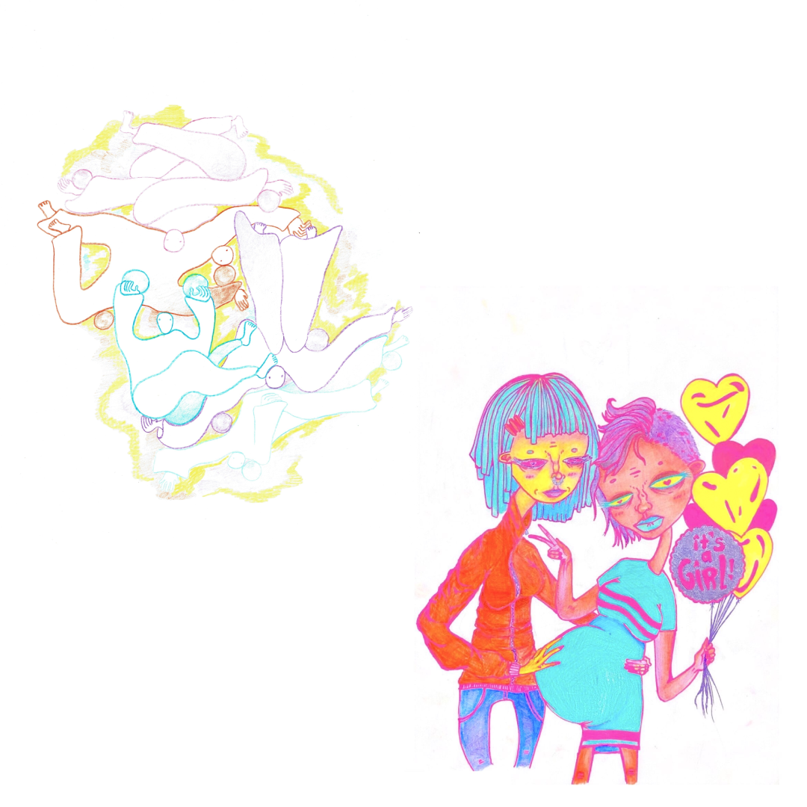

The Creative Supplement
The Creative Supplement
The Creative Supplement
Fall 2020

Brian Schatteman
Brian Schatteman
Brian Schatteman, Photography
Alana Dunlop, Poetry
Tristan Sito, Visual Art
Chloe Gordon-Chow, Visual Art; Taja Da Silva, Visual Art; Erica Brown; Poetry
Rasha Hamade, Photography
Lowell Wolfe, Poetry; Noah Vaton, Photography
Anthony Schokalsky, Poetry; Charlotte Pierrel, Visual Art
Nixie Akella, Poetry; Defne Gurcay, Visual Art
Nixie Akella, Poem; Sequoia Kim, Photo
Sequoia Kim, Photo
Elsasoa Jousse, Poem; C, Visual Art
Paloma Hepler, Visual Art
Zoe Lubetkin, Creative Writing; Pablo Labbate, Photo
Pablo Labbate, Photo; Leanne Young, Photo; Tatianna Sitounis, Poem
Abeer Almahdi, Visual Art
Sequoia Kim, Visual Art; Letter From the Editors
bird-killer
the bay window at my parents’ house is a bird-killer.
a pandemic has stolen my young adulthood, so i move back in.
from the couch i count five birds colliding with the glass,
their feathers splay out and milliseconds pass before they
drop and embrace the ground.
i know what it’s like to fly into something that might be
solid. i watched doors and mirrors crack from my own lethal hands.
from anger i can’t place—
it radiates through tense muscles and split ends and
overgrown fingernails abused by gold polish.
i feel for sale. in need of a deposit.
leased on craigslist like
a duplicate wedding gift
like a barren swing set
the crib that can’t conjure up the child.
it snows in may and
the trees bend, their backs breaking like
tiny bird bones against the window.
this is the fetid orchestra of my early adulthood:
the intimacy of enough water and mud to patch up
holes in house foundations.
a knuckle snap. a glass smash.
sex in a squeaking bed
that heaves under my sadness.
time slows at my parents’ house.
now when birds die they say eulogies to an audience of just me—
a midair funeral before the wind comes to claim them.
i make sure to put blueberries in the bird feeder. my grief eats
out of my hand.
as a child i was told don’t touch the bird, it could have a disease.
now i can’t touch birds or people.
i used to imagine growing up as a ritual. tender rebirth. but it became a
lonely hike to the first place i got kissed. to where we used to park the car.
to the recycling bins waterlogged from last night. to the scarlet scraped knees of time
that i disinfect with the rest of my groceries.
to the ugliness of my childhood town bubbling over with tears.
to the dead bird dumped on the interstate in a tourniquet made from a baby’s fleece.
to my own guilty face in the mirror. bird-killer.
- Alana Dunlop
Tristan Sito
Afterschool Adventure 12: Big Foot's Auto Repair

Afterschool Adventure 35: At the Harbourfront
Chloe Gordon-Chow
Taja Da Silva
Reading my Palm
Reading your own palm is harder than it seems
And I never quite remember how it’s done
What all the wrinkles and folds mean
Is the broken line down the center my life?
Or my heart?
Or is it just a crease from the heavy box I’ve been carrying
-Erica Brown
Rasha
Hamade
Junk
A river-side tire,
Tossed aside by some plighted wanderer.
High potential for travel included.
- Lowell Wolfe

Brian Schatteman

Noah Vaton
A sky too sharp to gaze
Grass too tall to graze
Concrete slabs making Everclear maze
Out of skyscrapers always looking to raise.
Bewildered, wired, nicotine-inspired,
Looking longingly into glass tower desire,
Coffee stains drilling their porcelain teeth,
Wine painting their couches with velvet deceit,
Throw up the square hat, put on the pin-stripe,
Shout and wave until the stone's engraved right,
Your headstone known, your marquee decrypted,
In an uninspired field, grass ungrazed,
Uplifted.
- Anthony Schokalsky

Charlotte Pierrel
Defne Gurcay


most days I lay in my casket unwavering,
the heaviness of laboured feet dragging
polluted soil. I lay
as you sobbed selfish tears, cascading
murky with holy water; You
commanded I be cured.
I, who lay unmoved, devoid of joyous
normalcy, bounded to sturdy Earth;
for how could I be reborn when
I could not feel.
feel? I lift my body, a feeble attempt; it resisted Home-
cooked meals, meals you blessed
with love.
but what did You know of undying love, that
I had sinned when my mind escaped
my body like a helpless
mouse eviscerating in unholy traps succumbing
to certain death.
but how
would it live its last moments- did the mouse
know its body defied its essence? did it
scamper purposefully towards death?
Did I?
You’d pray for me, who once swam
in the sureness of your womb and
howled when you threw
me out. for a casket houses the dead
and they may rest in certainty, as I
wish, but I always will be
unalive.
- Nixie Akella
Marcus Saldanha

Sara Negrin
Alex Hinton
Solace
I visited a landscape merely in search of solace. As the world seemed rushing through, it was quiet and rooted in the present. A caressing breeze shook the rustling poplar leaves. The widow branches cascaded in the wind. Distant chil dren screamed. Although roads clearly bounded it, this landscape extended from each wanderer’s home, offering an outdoor room in which to retrieve. I wandered through it several times over the summer. Only for yellowing leaves to remind me that it was vulnerable to the passage of time after all.
- Sabrina Girard-Lamas
Katia Lo Innes
Caught Between Two Stools
Perhaps, she should be born again,
Perhaps, she should be sown into a different skin.
For she spits into my ears,
with not a bit of mercy
She spits fire in the way she speaks,
her words are how still icy
She says,
this is a sin, a sin to shush her and mum her
And to leave her forgotten,
To leave her on her own, lonesome,
To let her follow the pattern,
of this humdrum lineage.
It is a sin, a sin to trap her,
In what is her own rib cage.
She wants to be the light, but she need not want to be the source,
She wants to show her might, but not with all her force,
She wants to serve her heart and her sense of being out on a platter,
But she wants to feast alone, on what's left of the latter.
She is always caught between two stools,
She wants to talk, but it t(w)o fools,
She wants to be able to be,
yet she doesn't,
She wants to able to feel,
but she want to do so with numbness.
She known not what she wants,
She perhaps never will,
But it it not the blind oblivion that haunts,
It is her very will.
- Shagun Sachar

Camille Delagrave-Ajduk
Sarah Ford


Cured
Sometimes I feel there is a little man inside of me.
He is very small, and every so often he
Peeks out of my orifices to see the world.
Today he looks out through my eyes;
Tomorrow he might prefer my nostrils.
Sometimes my ears are his object of choice.
Once, as I sat legs apart in front of the mirror,
Shaving myself like a
Caught rabbit,
I swear I saw him
Poke his head out and look me in the eye.
But he is never really part of me,
The little man is a growth, benign I hope;
An alien inside
My body, a parasite,
His gaze never leaves me
When I glance at my reflection in the mirror.
Wherever I am, he follows.
It’s not easy having a daughter like me,
A little man nestled in my neck,
Or perhaps my thigh, pinky finger or left breast.
His fingers curled inside my throat,
Like a corked bottle; My screams
Stopped by his incredible head.
So I wait:
For my hair to grow back,
For my skin to feel like skin again,
One day, not today or tomorrow, but sometime
It’ll just be me in this body.
- Asa Brunet-Jailly

Sara Negrin
Did you know that lightning causes thunder?
This is known. So is that
The universe is huge, there are 10 fingers and toes, and lice makes heads itchy.
I know how to tie a tie, or another’s shoelaces. I know where
Moon is loudest, louder than spiders wrapping
Moths for bedtime snacks.
I know that babies cry when they’re unhappy,
Rainbows come from invisible air-prisms,
Plants, cacti, fungi need light, water, air for growing.
Still things are unknown. I don’t know if
There are aliens, I’m unsure about the Dewey-Decimal System
And who made it.
I have yet to know whether
Mortgage has a silent “t”,
How to make a lunch but not eat it,
Why space is unexplored and my dinner is cold.
Today you didn’t know if there were six or seven reasons I’m going to hell,
Tomorrow you might not know the speed of sound, or what dragons lurk
Underneath the front porch (they’re red ones).
Maybe after I know you’ll know
All the words to “Goodnight Moon”,
Mom’s favorite colour,
The best spots to pick wild blueberries and how to put them in flapjacks
Just right
So they and fingers become blue
Then soak them in syrup until they’re almost too sweet,
Just sweet enough.
- Lowell Wolfe
Tasmin Chu

The McGill Tribune is proud to present the Fall 2020 Creative Supplement, highlighting excellent creative work by McGill students, including poetry, photography, illustrations, and mixed-media. We appreciate all the artists who submitted; it was a pleasure to review your work.
Although McGill doesn’t have a formal visual arts program, students find their own creative outlets. The Creative Supplement serves as a platform to highlight these endeavours. McGill students are notoriously bright and hardworking; we hope this issue proves that they are also immensely talented.
***something about covid?***